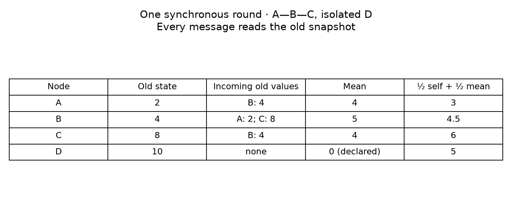
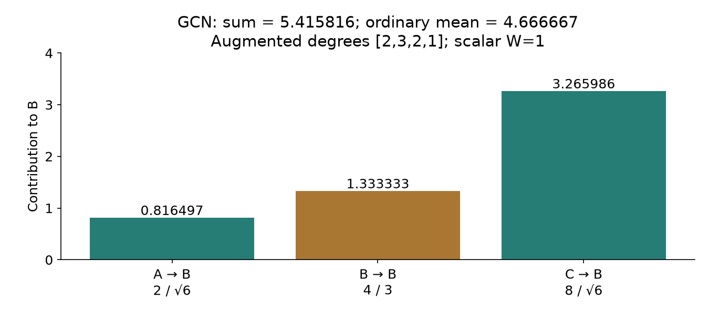
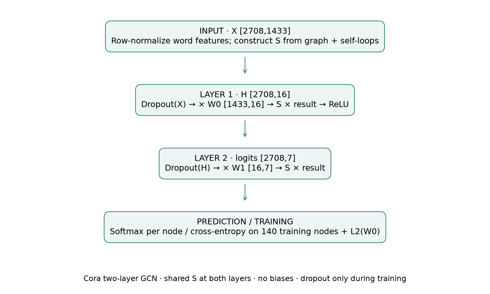
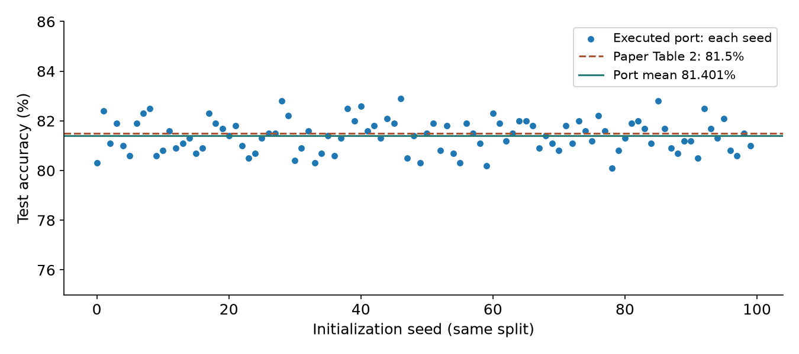

Year 2 · Quarter 4 · Lesson 078
Message passing: from a join to a GCN
Start cold · retrieve before reading¶
Without opening Lesson 77, explain why a deeper model cannot recover information missing from its input. Then draw a customer → order → merchant path. How many edges separate the customer from a merchant attribute? Write your answer before continuing.
Today’s win: compute every node’s new vector after one synchronous round of message passing, then explain precisely what makes a GCN layer different from a plain mean. The core route is sections 1–5 plus the three lab TODOs. The complete Cora experiment is a separate research route.
1 · A join becomes a message¶
In plain terms. Each node reads its neighbors’ old vectors, combines what it receives, and updates its own vector. Every node does this from the same snapshot.
A node is an entity represented by a row. An edge is a permitted connection between entities. A node feature vector is a list of numeric measurements for that entity. A hidden state, also called an embedding here, is the vector carried between layers. It need not be learned in a hand calculation.
Routing convention. An edge (source, destination) sends information from source to destination. A database foreign key tells us how rows connect; we must still choose the direction in which information flows. Order → customer sends order information to its customer. Bidirectional flow requires both directions.
Worked example. Nodes A, B, C and D start with scalar states [2,4,8,10]. The graph is the undirected chain A—B—C plus isolated D. Store each chain edge in both directions. There are no self-edges in this first example.
For B, incoming messages are A’s 2 and C’s 8. Their mean is (2+8)/2 = 5. Our illustrative update takes half the old self-state and half the neighbor mean: B_new = max(0, .5×4 + .5×5) = 4.5. The maximum with zero is ReLU, a function that keeps positive values and replaces negative ones with zero. These coefficients are fixed teaching choices, not trained parameters.

All nodes. Incoming means are [4,5,4,0]; updated states are [3,4.5,6,5]. D’s neighbor mean is defined as zero, so its update is 5. An isolated node does not necessarily retain its state: that depends on the update rule. A self-loop would change this calculation.
Synchronous means one shared old snapshot. Updating A in place before B would make B read A=3, producing 4.75 instead of 4.5. That error makes node storage order affect the result. Keep input and output arrays separate.
2 · The MPNN abstraction¶
In plain terms. A learned message function decides what to send. A reduction combines incoming messages. A learned update decides what to keep.
Gilmer and colleagues organize message passing around these equations:
m_v^(t+1) = SUM over w in N(v) of M_t(h_v^t, h_w^t, e_vw)
h_v^(t+1) = U_t(h_v^t, m_v^(t+1))
graph_prediction = R({h_v^T : v in graph})
Here v is the receiving node, w is a neighbor, and N(v) is its neighbor collection. t numbers rounds; T is the final round. h is a node state; e is an edge feature such as relation type. M produces a message, SUM reduces messages, and U updates the state. R is a readout that combines final states when the target belongs to the whole graph, as with a molecule. Node classification instead predicts separately from each final node state. See Gilmer et al., §2.
Our mean fixture is a simple message-passing variant: send h_w, sum the messages and divide by incoming count, then apply the stated self/neighbor update. It is not the paper’s full molecular architecture. The paper’s abstract sum formulation and this explicit mean must not be conflated.
What becomes learned? Replace fixed scalar coefficients with matrices, for example ReLU(h_v W_self + m_v W_neighbor + b). With states of width d and output width k, both matrices have shape d×k, the bias has k entries, and every node shares these parameters. A supervised loss changes the shared parameters through gradients. It does not change the identity of eligible neighbors unless graph construction is itself part of a separately specified model.
Order and identity. Summation or mean is invariant to neighbor enumeration. Renaming all nodes and reindexing their features and edges together merely renames the outputs: this is permutation equivariance. The node outputs move with the nodes; they are not one invariant graph vector. An invariant graph readout would remain unchanged under that relabeling.
A reduction still loses information. [2] and [2,2] have the same mean. More graph access does not guarantee that a reducer preserves the target signal. This is the same information-interface issue as Lesson 77.
3 · Reach and point-in-time safety¶
In plain terms. One layer carries a neighbor’s current information one edge. A second layer can carry information that neighbor received from farther away.
On A—B—C, changing C from 8 to 20 leaves A’s first update at 3. But B’s first update rises from 4.5 to 7.5, so A’s second update rises from 3.75 to 5.25. These numbers follow the same synchronous rule. A receptive field is the set of input nodes that can influence an output. With this fixed graph and local updates, after two layers A can depend on C.
Relational connection. A manual GROUP BY customer_id with AVG(amount) performs identity routing and reduction. A graph layer generalizes the message and update functions so supervised training can learn which combinations matter. It does not automatically generalize eligibility rules.
Time boundary. Before every hop, restrict nodes, edges and attributes to information available at the prediction cutoff. An event dated before the cutoff but ingested later is unavailable. A two-hop merchant feature computed from future transactions can leak even when the direct order edge is old. Recompute degree normalization on the eligible graph; future edges can otherwise change today’s weights without sending their feature values.
Cora is a different protocol. The research lane is transductive: all graph structure and node features are supplied during training, while only training-node labels enter the loss. Validation labels determine stopping. Test labels are used only after stopping. This is the declared benchmark; it is not evidence of temporal database safety.
4 · GCN: a weighted sum, not an ordinary mean¶
In plain terms. GCN adds each node to its own neighborhood and weights a message using both endpoint degrees.
Let A[v,w]=1 when w sends to v. For the undirected GCN graph, A is symmetric. Add the identity matrix I, whose diagonal is one: A_tilde=A+I. Let d_v count node v’s neighbors including that self-loop. The normalized support matrix has entries S[v,w]=A_tilde[v,w]/sqrt(d_v d_w). A layer is H_new = ReLU(S H W). H has shape N×d, W has shape d×k, and S is N×N. Thus outputs have shape N×k. These are Kipf and Welling’s Eq. 2.
Worked example, same chain. Augmented degrees are [2,3,2,1]. Set W=1 to isolate normalization. B receives 2/sqrt(6) from A, 4/3 from itself, and 8/sqrt(6) from C. Total: approximately 5.415816. A receives 2/2 + 4/sqrt(6) ≈ 2.632993. C receives 8/2 + 4/sqrt(6) ≈ 5.632993. D retains 10 through its sole self-loop.

Why not call this a mean? B’s weights sum to 2/sqrt(6)+1/3 ≈ 1.149830, not 1. A mean including self would be (2+4+8)/3 ≈ 4.666667. Symmetric normalization and a row-normalized mean are different operators. The paper motivates this support through an approximation to spectral graph filtering and a renormalization step; that derivation belongs to the deeper GCN lesson. Here you must reproduce the actual local operator.
5 · Model architecture: the complete Cora GCN¶

Input. Cora supplies 2,708 document nodes, 1,433 bag-of-words features and seven target classes. Row normalization divides each document’s feature vector by its feature sum; zero rows remain zero. Citation links are treated as undirected, binary edges. Self-loops and symmetric normalization produce S. The raw graph has no self-edges (verified). The reproduction binarizes duplicate links, follows the released adjacency construction and adds identity exactly once.
First layer. During training, feature dropout randomly zeroes entries and scales retained entries by 1/(1−p) with p=.5. Multiply by W0[1433,16], route through S, and apply ReLU. The hidden matrix is [2708,16].
Second layer. Apply hidden dropout, multiply by W1[16,7], then route through S again. Output logits have shape [2708,7]. A logit is an unnormalized class score. Softmax turns each row into class probabilities. Cross-entropy rewards the true class; the implementation consumes logits directly for numerical stability. Neither layer has a bias. There is no pretrained checkpoint: both weights start from Glorot uniform initialization, with bounds determined by input and output widths.
Training boundary. Full-graph forward passes expose all permitted features. The loss averages cross-entropy over only 140 training nodes and adds .0005 × .5 × sum(W0²). The first-layer penalty matches TensorFlow’s half-squared-norm convention. Adam updates both matrices. At inference, dropout is disabled; the graph operations and learned matrices stay the same. There is no graph-level pooling head.
6 · Full reproduction, with the remaining differences visible¶
The named target is GCN, Cora, fixed split, Table 2: paper accuracy 81.5%, averaged across 100 random initializations. This is one complete experiment, not the whole paper. The released implementation fixes the data split and configuration. We pin its source and raw dataset bytes with SHA-256 hashes.
| Item | Executed contract |
|---|---|
| Data | Full released Cora, all 2,708 nodes; no subsampling |
| Labels | 140 train (20 per class), 500 validation, 1,000 test |
| Architecture | Two bias-free GCN layers, 16 hidden units, ReLU |
| Optimizer | Adam, learning rate .01, betas .9/.999, epsilon 1e-8 |
| Regularization | Dropout .5 at both layer inputs; first-weight L2 only |
| Schedule | At most 200 epochs; current validation loss vs prior-ten mean |
| Selection | Released stopping rule; last weights, no best-checkpoint restore |
| Replication | Seeds 0–99; fixed split; mean, sample SD and standard error |
A source mismatch you should notice. The paper says ten consecutive epochs without validation improvement. The release compares current validation loss against the mean of the preceding ten losses once the zero-based epoch exceeds ten. We reproduce the released rule and name it explicitly. Validation loss includes the regularization term. Never quietly replace this with modern patience/best-checkpoint training and call it identical.
Author-reference results — executed locally, not your current kernel output.
| Experiment | Seeds | Mean accuracy | Sample SD | Standard error |
|---|---|---|---|---|
| Full Cora release-protocol port | 100 | 81.401% | 0.658 percentage points | 0.066 percentage points |
| Paper Table 2 target | 100 | 81.5% | Not stated in this row | Not stated in this row |
Local minus paper: -0.099 percentage points. No hyperparameters were changed after reading the test results. All seed results.

Scope check. This is a full-data, full-schedule PyTorch port of the released Cora experiment. TensorFlow 1 and PyTorch differ in random-number streams and Adam’s numerical details; the paper does not publish the identities of its 100 seeds. Similar accuracy does not establish bitwise or original-framework parity. The other datasets, baselines and Gilmer QM9 molecular experiments are NOT_RUN here. The hand mean example is not a molecular-result reproduction.
Re-run from the repository root:
.venv/bin/python labs/_verify_l078.py
.venv/bin/python labs/_run_l078.py --seeds 100
.venv/bin/python labs/_build_l078.py
Use the reproduction contract for a fresh environment and the source manifest for file identities. The notebook exposes every part of preprocessing, the model and the training loop. The post-EXIT cell runs this same complete protocol from the functions visible in your kernel.
7 · Lab: derive, implement, intervene¶
Open the lab · Download notebook · Reference card.
- TODO: implement mean incoming messages, including an empty neighborhood. CHECK the four-node fixture and reversed edge order.
- TODO: implement the synchronous self/neighbor update. CHECK all four outputs and node-permutation equivariance.
- TODO: implement symmetric GCN normalization. CHECK the hand weights and isolate why it differs from row mean.
- Intervene: change only C. Predict which first- and second-round outputs change before running the supplied experiment.
- EXIT: explain message, reduction, update and readout in your own words. Give one temporal leakage path and show the boundary that blocks it. Explain why the Cora test graph is visible but its labels are not training inputs.
Research-route interpretation. Read the per-seed table and plot, compare the local mean to 81.5%, and identify two differences that prevent an exact parity claim. The standard error describes initialization variability on one fixed graph/split. It does not measure generalization across new graphs or temporal deployments. Do not tune on this comparison; a new protocol is a separate experiment.
Tomorrow: compute B’s mean and GCN outputs without notes. One week later: derive why node relabeling reorders outputs, then construct a graph where mean loses multiplicity. Ask your tutor follow-up questions or send your hand calculation and notebook outputs for review. Lesson creation does not imply learner completion.
Primary reading: Gilmer et al., §2 for the organizing abstraction; Kipf and Welling, §2–3 and §5–6 for the layer and the Cora experiment. Return to Lesson 76’s encoder–predictor stack to locate these layers; L081 develops MPNNs further.